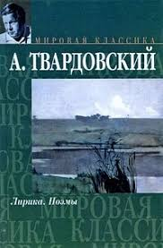

Лирика.Поэмы
Автор: А.Твардовский
Год: 2009
Стихи и поэмы о судьбе простого человека и солдата, включая знаменитого «Василия Тёркина».

Автор: А.Твардовский
Год: 2009
Стихи и поэмы о судьбе простого человека и солдата, включая знаменитого «Василия Тёркина».